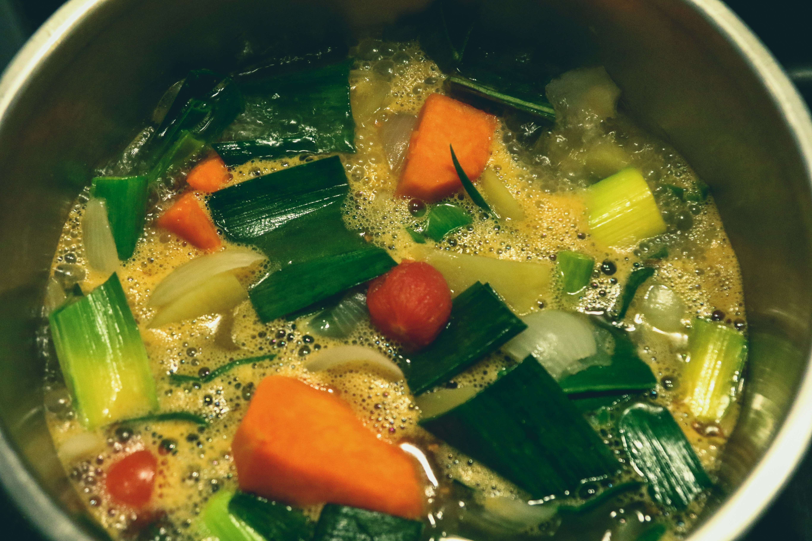

Vegetable Soup

Photo by
Jametlene Reskp
on
Unsplash
Warm and Healthy Comfort Food
Vegetable soup is a simple and nutritious dish made with fresh vegetables
and flavorful broth.
It is perfect for a light lunch or a warm dinner.
Ingredients
- 1 carrot
- 1 potato
- 1/2 cup peas
- 1/2 cup cabbage
- 1 onion
- 4 cups vegetable broth
- 1 tablespoon cooking oil
- Salt and pepper
Steps:
- Heat oil in a large pot.
- Add chopped onion and cook until soft.
- Add the remaining vegetables.
- Pour in the vegetable broth.
- Bring the soup to a boil.
- Reduce heat and simmer until vegetables are tender.
- Season with salt and pepper.
- Serve hot.